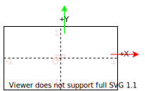

|
LeiaSR SDK 3e4093ae v1.34.8.37806 2025-10-23T12:33:42Z
Stable
|
|
LeiaSR SDK 3e4093ae v1.34.8.37806 2025-10-23T12:33:42Z
Stable
|
There are many ways to represent and reason about three-dimensional data. Points in space are relative to a certain reference frame, this is described in depth in the following sections.
All point based output generated by LeiaSR interfaces, such as the eye positions and the head position, is expressed as a 3-dimensional vector [X, Y, Z] related to the following coordinate space:
See the picture below for an illustration of the coordinate system.
Head orientation output is expressed as a 3-dimensional vector [pitch, yaw, roll], where the pitch increases when the user rotates his head upwards, the yaw increases if the user rotates his head to the left and the roll increases when the user tilts their head to the left, all from the perspective of the user. See the picture below for an illustration.
All orientation data is expressed in degrees, and the orientation is zero when the user looks straight at the device.
Note: When defining interactions, this is all you need to know about the LeiaSR coordinate system. The following section simply provides additional context
The reason for constructing the coordinate system as defined is as follows. LeiaSR applications are inherently interactive. Applications are not just projecting objects in a virtual space onto the display. The user's position with respect to the display is observed by a camera (and projected onto an image). Pixels in camera images can be characterized by a color and a location represented by a two-dimensional coordinate. In this case the matrix of pixels has rows (Y) and collumns (X) as below.

From the perspective of the camera, if we add depth to the image we get the following.
To match what you would expect when looking at a traditional set of axes (on any graph) we rotate the coordinate system 180 degrees along the Z axis. This results in a coordinate system that is equivalent to the one described in the previous section where moving the point right results in a larger value for X and moving the point up results in a larger value for Y..
The position of the user's eyes in the LeiaSR Coordinate System may need to be converted to some third-party specific convention to enable the construction of eye specific projection matrices. This is demonstrated below for several frameworks.
For some frameworks, the LeiaSR coordinate system can be used directly, you may have to rotate the virtual camera but no specific conversions are required. The LeiaSR coordinate system is right-handed, if a framework uses a left-handed coordinate system a specific conversion is required.
Unreal Engine employs a left-handed coordinate system. LeiaSR coordinates need to be converted to a left-handed system to be used for interactions in the virtual environment offered by Unreal Engine. Unreal Engine also has some specific conventions that we want to be compatible with. The Unreal plugin converts the input point and constructs FVector(X, Y, Z) such that FVector(float(-SrVector.z), float(SrVector.x), float(SrVector.y)) This means that the X axis is pointing into the screen, the Y axis is pointing right and the Z axis is pointing up from the perspective of the viewer. Projections based on eye positions are also automatically generated by the Unreal plugin.
Note that the position of the virtual camera will determine how interactions should be defined.
The values of X, Y and Z are expressed in centimeters after conversion to the Unreal Engine coordinate system.
Unity employs a left-handed coordinate system. LeiaSR coordinates need to be converted to a left-handed system to be used for interactions in the virtual environment offered by Unity. The Unity plugin does this by multiplying flipping the Z coordinate. (multiplying with -1) This means that the Z axis will be pointing into the screen. Projections based on eye positions are also automatically generated by the Unity plugin.
Note that the position of the virtual camera will determine how interactions should be defined.
The values of X, Y and Z are expressed in meters after conversion to the Unity coordinate system.
Applications that have full control over the rendering pipeline are not bound to using any type of 'handedness' for defining their projections and/or logic. The screen coordinate system that is used by the shader programs is defined as follows.

The values of the X and Y coordinates in the screen coordinate system are related to the height and width of the screen. An X value of 1 refers to the right-most border of the screen. A Y value of 1 refers to the upper-most border of the screen.
An example of projection onto the screen coordinate system can be found in the OpenGL example